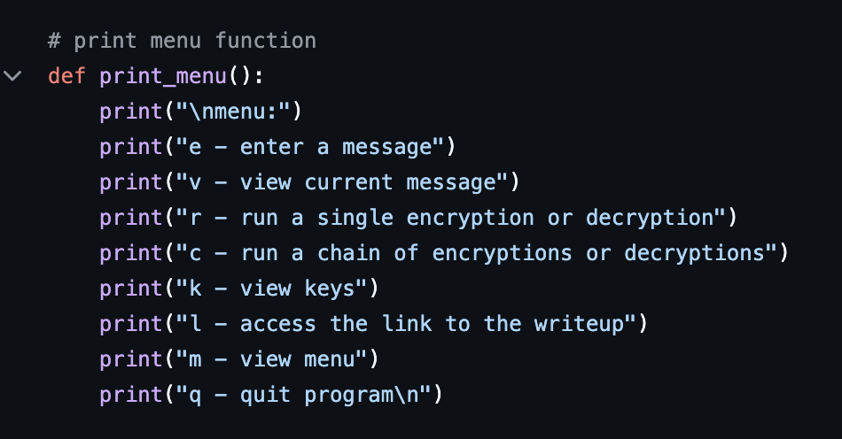
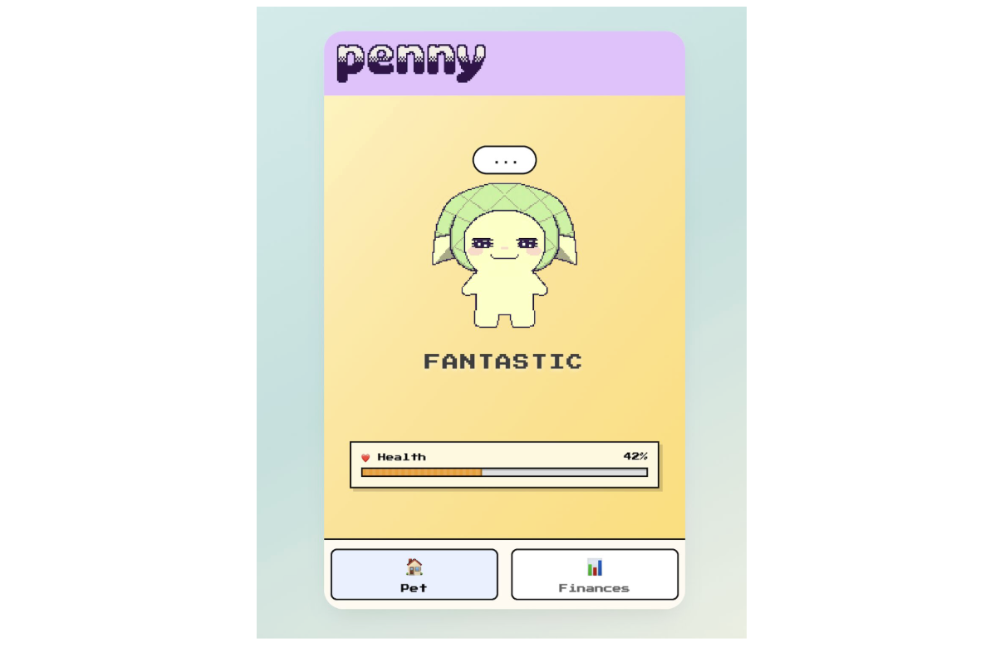
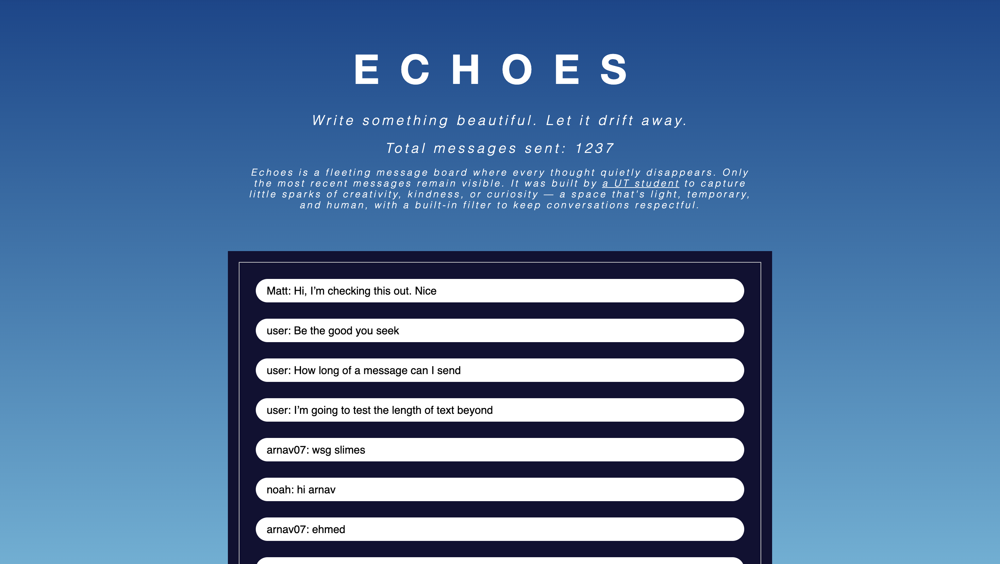
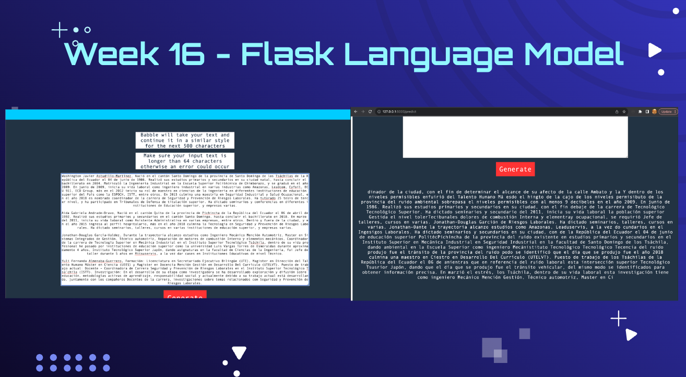
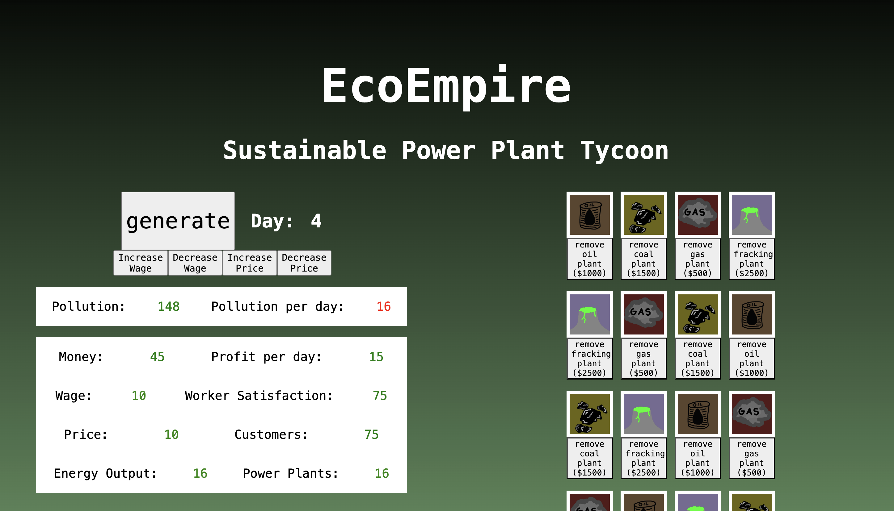
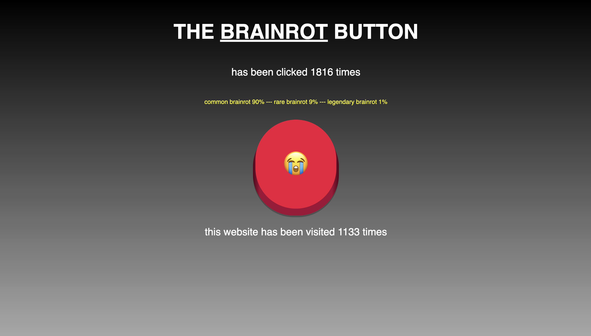
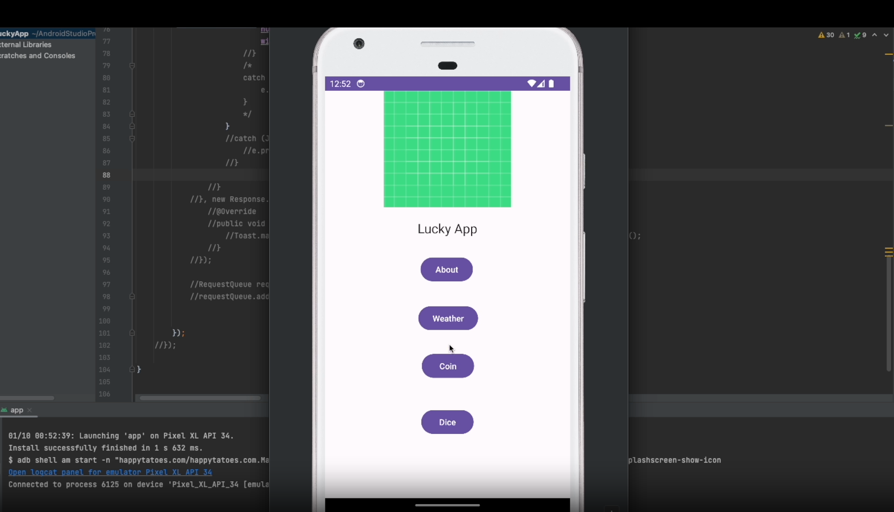
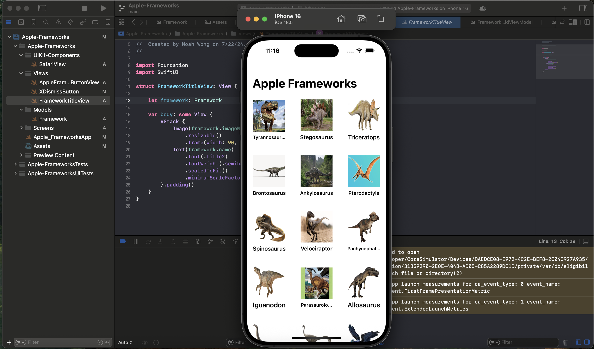

Esoterify: Cryptographic Composition Toolkit
March 23, 2026 • What are the tradeoffs of each encryption method? • 3201 words
Hi! I'm Noah, and I love [building], [researching, writing], and [talking] to people about how to use technology to make a positive impact on the world.
-----


Right now, I'm a freshman at UT Austin studying Computer Science with a minor in Core Texts and Ideas.
I'm training as a SOC Analyst at UT's Information Security Office, working on Systems Security Research, and building a few other things.
Long term, I'd love to contribute to the next layer of defense as we build new computer systems and AI infrastructure.
Here's a little timeline about what I've been up to, where I am now, and where I hope to go someday.
TIMELINE
-----
The world is changing fast, and so am I. In general, I want to use my { integrity, curiosity, creativity, adaptability } for the benefit of { humanity, community, freedom }.
I'm into tech because I love learning, and I want to evolve fast in the face of cutting edge breakthroughs.
In no particular order, these are my other current obsessions.
-----
Interests
If anything above resonated with you, don't hesitate to [connect]. And if you're all the way down here, thank you so much for reading.
peace,
noah
March 23, 2026 • What are the tradeoffs of each encryption method? • 3201 words
February 17, 2026 • What should we strive for? • 1280 words
February 9, 2026 • Why does the full adder work? • 661 words
January 31, 2026 • What makes us human? • 554 words
January 23, 2026 • Does tone make LLMs more dangerous? • 975 words
hint: click to flip!

EsoterifyEsoterify
Cryptographic Chaining Toolkit. I combined RSA, AES, ChaCha20, and Caesar ciphers to explore their tradeoffs. Compared effeciency and security benefits.

PennyPenny
Penny makes financial advice cuter than ever! Uses Gemini API to analyze your data and generate personalized tips. Built for HackTX with Heather Kim, Avery Allen, and Isaac Fleitas.

EchoesEchoes
The Ephemeral Social Media Site. Built with Supabase, SQL, Google Auth, and vanilla JS. Includes a multi-layered hate speech filter and auto-deletion function. Over 1200 posts and 40 users!

BabbleBabble
Custom language models from scratch. Built on Andrej Karpathy's self-attention tutorial. Feed in any dataset and get a model that writes in your style.

Eco EmpireEco Empire
Manage a virtual power plant through rounds of tough decisions. Balance economic growth against environmental impact and try not to melt the planet.

Brainrot ButtonBrainrot Button
Take control of your brainrot. Tired of dopamine hits from infinite scroll? Click the button instead. Built with Node, Express, and MongoDB.

Lucky AppLucky App
What are the chances? Flip a coin, roll dice, or fetch live weather via API. My first Android app. Built from scratch with Android Studio, Java, and XML.

Dino AppDino App
Prehistoric info, modern interface. My first Swift/iOS project, built in Xcode following a Sean Allen tutorial. Then added my own prehistoric twist with real dino facts.